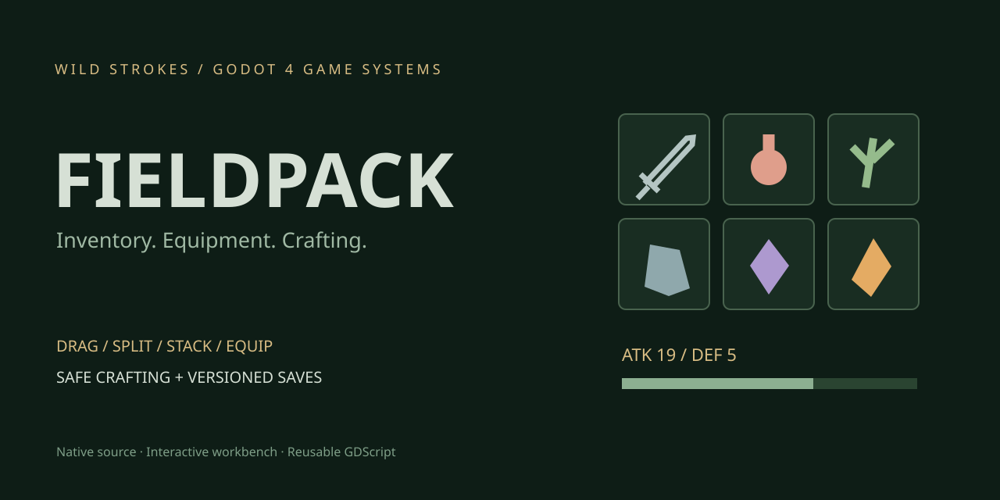

A place for everything.
Backpack and chest storage, stack limits, drag/drop swaps, Shift-drag splitting and one-click sorting.
02 / NATIVE GODOT 4 PROJECT
An inventory that does more than hold items.
Move, split, stack, equip and craft in a native Godot workbench.
Godot 4.4.1 · Mouse + keyboard · Original code-drawn symbols · MIT license. This page is the project overview; download and run the interactive demo in Godot.

Backpack and chest storage, stack limits, drag/drop swaps, Shift-drag splitting and one-click sorting.
Equip a sword, armor and charm. Strike a training dummy and compare attack damage before and after upgrading gear.
Craft potions, a charm and an ember blade. If the result cannot fit, the operation keeps the original inventory intact.
TRY A COMPLETE FLOW
project.godot into Godot 4.4.1.Click to inspect · Drag to move · Shift-drag to split · Double-click to equip/use · F5 save · F9 load
REUSABLE GAMEPLAY CODE
The inventory model emits signals for updates and feedback. It validates equipment, handles item quantities and commits crafting as one transaction. Your own game can use the same model with a different HUD and world pickups.
37 headless model/UI integration checks passed in Godot 4.4.1. Graphical drag gestures, visual layout and exported builds have not been verified in this environment. This is a single-player Godot starter; a UE5 implementation would be a separate project.